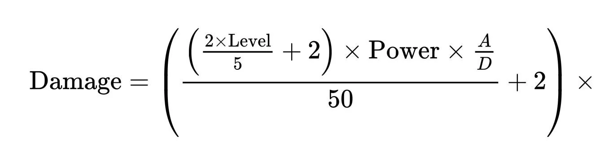

Stats
Every Pokemon has a variable amount that goes into six basic stats
- HP, or health points, which determines how much damage a Pokemon can take before fainting.
- ATK, or attack, which determines how much damage is done by a Pokemon's physical attacks.
- Sp. ATK, or special attack, which is functionally the same as the attack stat, but for special (non-physical) moves.
- DEF, or defense, which reduces the amount of damage received from physical attacks.
- Sp. DEF, or special defense, which is functionally the same as defense, but for special attacks.
- SPD, or speed, which determines the order in which Pokemon attack in a turn.
In addition to stats, there are numerous other effects and moves that can alter the damage formula, shown below.
Level is the attacking Pokemon's level, Power is the move's base power, A is the attacker's attack or special attack, depending on the move, and D is the defender's defense or special defense depending on the move. That formula is then multiplied by a gauntlet of other effects, of which I will not detail here.